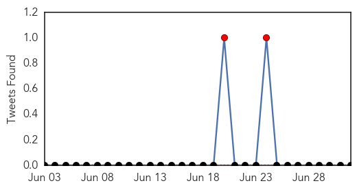
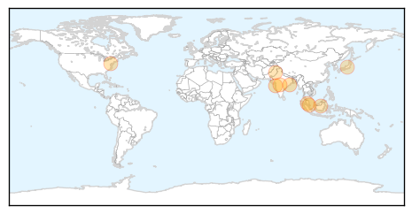

30 Day Trends
Web: 3 alerts, 0 warnings
Twitter: 2 alerts, 0 warnings
Top Articles:
- 0.968
- Maharashtra tops in dengue prevalence
- 0.950
- Minister of Health weighs in on chikungunya virus in Cayman
- 0.949
- Monsoon maladies: Diseases lurk around
- 0.915
- Dengue deaths more than thrice last year’s
- 0.889
- The Nation's Health: Some Gains, But No Big Wins
- 0.873
- 7 die of dengue in North Cotabato, Maguindanao
- 0.872
- Zoonotic diseases ignored in developing world
- 0.869
- Doctors told to carry out dengue diagnosis if patients have fever – BorneoPost Online
- 0.845
- Dengue surveillance: Health dept vows action against those skipping cabinet meet
- 0.828
- Task force lists its priorities - Nation
- 0.815
- Another toddler contracts JE - Nation
- 0.602
- Six hotspots in Ampang Jaya - Community
Top Tweets:
-
No tweets found for Jul 02, 2014
Web/News Articles
Tweets
Article Locations
Article Confidences